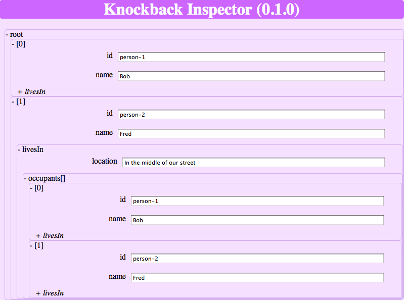

Tutorial (Advanced): Knockback-Inspector.js
This tutorial shows how to create an inspector for a Backbone.Model or a Backbone.Collection that you can embed in your website for debugging purposes. For a model, the inspector allows you to view and edit its attributes including nested models and collections; for a collection, the inspector allows you to view and edit its models.
Note: because this is an intermediate tutorial, you should already have reviewed the Tutorial Introduction before attempting this one.
Try out the Knockback-Inspector:
Although the inspector can be useful as presented in this tutorial, this version is simple and stripped down for learning purposes (the tutorial may not match the live demo).
Please download the Knockout-Inspector project from GitHub and follow along with each step of this tutorial in the /tutorials/step folder.
Let's begin...
Let's start with the goals of a simple model and collection inspector...
Model Injectionspector Goals
- For each simple-typed attribute, provide a label for the attribute name and a text box to edit the value
- For each model-typed attribute, provide a collapsable node with the attribute name and when opened, allow each model attribute to be inspected by type
- For each collection-typed attribute, provide a collapsable node with the attribute name and when opened, allow each model to be inspected
Collection Inspector Goals
- For each model-typed attribute, provide a collapsable node with the index model and when opened, allow each model attribute to be inspected bytype
Inspector Visualization
Here is what the inspector could look like for a house model that has a location (simple-typed attribute) and multiple occupants (collection-typed attribute) who each has an id (simple-typed attribute), a name (simple-typed attribute), and who know which house they are living in (model-typed attribute):

HTML Templates
Given the recursiveness of the design, I chose to implement this functionality using two reusable HTML templates: one for a model node that generates HTML for each of its attributes and one for a collection node that generates HTML for each for its models:
Model Node View Structure (template: 'kbi_model_node')
Here is some pseudo-HTML for the model node:
<li data-bind="css: {opened: opened, closed: !opened()}">
<div data-bind="click: function(){ opened(!opened()) }">
<span data-bind="text: (opened() ? '- ' : '+ ' )"></span>
<span data-bind="text: name"></span>
</div>
<!-- FOREACH ATTRIBUTE -->
<!-- IF SIMPLE -->
<fieldset>
<label></label>
<input type='text'>
</fieldset>
<!-- ELSE IF MODEL -->
<!-- RENDER MODEL NODE -->
<!-- ELSE IF COLLECTION -->
<!-- RENDER COLLECTION NODE -->
</li>Highlights:
- Each model node uses a list item tag that can either be in opened or closed state
- Use a div tag to wrap a +/- state indicator, the name of the node, and a click handler to toggle the opened/closed state of the node
- The model attributes are grouped in a form tag
- Each simple-typed attribute are wrapped in a fieldset tag in with a label tag and input tag for the name and value, respectively
- Each model-typed attribute are rendered using the model node template
- Each collection-typed attribute are rendered using the collection node template
Collection Node View Structure (template: 'kbi_collection_node')
Here is some pseudo-HTML for the collection node:
<li data-bind="css: {opened: opened, closed: !opened()}">
<div data-bind="click: function(){ opened(!opened()) }">
<span data-bind="text: (opened() ? '- ' : '+ ' )"></span>
<span data-bind="text: name"></span>
</div>
<!-- FOREACH MODEL -->
<!-- RENDER MODEL NODE -->
</li>
Highlights:
- Each collection node uses a list item tag that can either be in opened or closed state
- Use a div tag to wrap a +/- state indicator, the name of the node, and a click handler to toggle the opened/closed state of the node
- The collection's models are wrapped in an unordered list tag and each model can be rendered using the model node template
Using Knockback.js, we can implement an inspector by:
- Using Knockback to generate a graph starting at a kb.ViewModel or kb.CollectionObservable from a Backbone.Model or Backbone.Collection, respectively.
- Using Knockout to traverse the graph, to wrap each kb.ViewModel node or kb.CollectionObservable node in a NodeViewModel, and to conditionally continue to render the graph depending on the opened/closed state of the node.
Graph Generation
By default, a kb.ViewModelwill generate a kb.ViewModel for each of its nested models and a kb.collectionObservable for each of its nested collections when used like:
kb.viewModel(my_model)
Also, a kb.CollectionObservablecan easily be configured to generate a kb.ViewModel for each of its models when configured like:
kb.collectionObservable(my_collection, {view_model: kb.ViewModel})
What this means is that Knockback takes care of circular references between Backbone.Models or Backbone.Collections so you don't have to. In the case of circular references, you just need to be careful to handle cycles correctly when you traverse the nodes in the graph.
Traversing the Graph
Because there can be cycles between the models and collections in the graph, the inspector uses a separate kbi.NodeViewModel to expose properties for the opened/closed state of the node, the name of the node, and the (potentially shared) node itself. A kbi.NodeViewModel is constructed with the following parameters: (name, opened_state, kb.ViewModel or kb.CollectionObservable).
By doing this, the same kb.ViewModel for a model can be opened or closed in different parts of the tree and can have unique names depending on where it is referenced from.
Also, each of the node templates, needs to take appropriate action to block the full tree from being rendered out when a kbi.NodeViewModel is in the closed state. With Knockout, this is easy to do using a '' control flow statement.
Updating the 'kbi_model_node' pseudo HTML:
<li data-bind="css: {opened: opened, closed: !opened()}">
<div data-bind="click: function(){ opened(!opened()) }">
<span data-bind="text: (opened() ? '- ' : '+ ' )"></span>
<span data-bind="text: name"></span>
</div>
<!-- ko if: opened -->
<!-- FOREACH ATTRIBUTE -->
<!-- IF SIMPLE -->
<fieldset>
<label></label>
<input type='text'>
</fieldset>
<!-- ELSE IF MODEL -->
<ul data-bind="template: {name: 'kbi_model_node', data: kbi.nvm(attribute_name, false, node)}"></ul>
<!-- ELSE IF COLLECTION -->
<ul data-bind="template: {name: 'kbi_collection_node', data: kbi.nvm(attribute_name+'[]', true, node)}"></ul>
<!-- /ko -->
</li>
Updating the 'kbi_collection_node' pseudo HTML:
<li data-bind="css: {opened: opened, closed: !opened()}">
<div data-bind="click: function(){ opened(!opened()) }">
<span data-bind="text: (opened() ? '- ' : '+ ' )"></span>
<span data-bind="text: name"></span>
</div>
<!-- ko if: opened -->
<!-- FOREACH MODEL -->
<ul data-bind="template: {name: 'kbi_model_node', data: kbi.nvm('['+$index()+']', false, node)}"></ul>
<!-- /ko -->
</li>
Please note:
- Each kb.ViewModel or kb.CollectionObservable node is rendered with
- to start a new tree that is filled in by either the 'kbi_model_node' or 'kbi_collection_node' templates.
- Each kbi.NodeViewModel is given a name to indicate its relationship.
- In the case of models, the templates are rendered in a closed state to break potential cycles; whereas, collections are rendered in an open state so we are presented with the indices of the contained models.
- When the node is closed, only the HTML that displays the name of the node and allows for a click to open the node is generated.
Knockback-Inspector will be designed as a library with the following characteristics:
- It will be in the 'kbi' namespace
- It version will be available in 'kbi.VERSION'
- It code will be separated into multiple directories and files as follows:
- lib - kbi_core.js/.coffee - kbi_string_template_engine.js/.coffee - models - kbi_fetched.js/.coffee - view_models - kbi_node_view_model.js/.coffee - views - kbi_collection_node_view.js/.coffee - kbi_model_node_view.js/.coffee
- The files will contain the following implementations:
kbi_core.js/.coffee
Provides the kbi namespace and the kbi.VERSION semantic versioning string.
kbi_string_template_engine.js/.coffee
Implements kbi.TemplateSource and kbi.TemplateEngine to expose the 'kbi_model_node' and 'kbi_collection_node' templates to Knockout.js.
kbi_fetched.js/.coffee
Implements the kbi.FetchedModel and the kbi.FetchedCollection classes providing a Backbone.Model and a Backbone.Collection with the parse function that can be used to inspect a JSON server response when you do not have your own specialized implementations.
kbi_node_view_model.js/.coffee
Implements the kbi.NodeViewModel class to create a ViewModel instance for each kb.ViewModel or kb.CollectionObservable node in the graph with a name and opened state.
Because the kbi.NodeViewModel class is shared for kb.ViewModel and kb.CollectionObservable nodes, in the case of kb.ViewModel, we need to add slightly more functionality to handle exposing and traversing the attributes:
- Attribute Names: in order to be able to iterate through all of the attributes in a Backbone.Model with Knockout, we will store their names in an array.
- Attribute Types: in order to select the correct attribute rendering in the template, we provide a helper function called 'kb.utils.valueType()' that returns the string kb.TYPE_SIMPLE, kb.TYPE_MODEL, or kb.TYPE_COLLECTION
Updating the pseudo-HTML for the model node:
<li data-bind="css: {opened: opened, closed: !opened()}"> <div data-bind="click: function(){ opened(!opened()) }"> <span data-bind="text: (opened() ? '- ' : '+ ' )"></span> <span data-bind="text: name"></span> </div> <!-- ko if: opened --> <!-- ko foreach: attribute_names --> <!-- ko if: (kb.utils.valueType($parent.node[$data]) == kb.TYPE_SIMPLE) --> <fieldset> <label data-bind="text: $data"> </label> <input type='text' data-bind="value: $parent.node[$data]"> </fieldset> <!-- /ko --> <!-- ko if: (kb.utils.valueType($parent.node[$data]) == kb.TYPE_MODEL) --> <ul data-bind="template: {name: 'kbi_model_node', data: kbi.nvm($data, false, $parent.node[$data])}"></ul> <!-- /ko --> <!-- ko if: (kb.utils.valueType($parent.node[$data]) == kb.TYPE_COLLECTION) --> <ul data-bind="template: {name: 'kbi_collection_node', data: kbi.nvm($data+'[]', true, $parent.node[$data])}"></ul> <!-- /ko --> <!-- /ko --> <!-- /ko --> </li>Because Knockout.js pushes a new binding context on the stack during the iteration through the attribute_names, $data is mapped to the attribute name and the attribute itself can be accessed in the parent context using $parent.node[$data])
kbi_collection_node_view.js/.coffee
Provides kbi.CollectionNodeView which holds an HTML string that is used by the kbi.TemplateEngine whenever Knockout.js requests the 'kbi_collection_node' template.
kbi_model_node_view.js/.coffee
Provides kbi.ModelNodeView which holds an HTML string that is used by the kbi.TemplateEngine whenever Knockout.js requests the 'kbi_model_node' template.
OK. Let's start...
This tutorial demonstrates how to use Knockback to create a tree view to inspect Backbone.Model attributes and Backbone.Collection models including potentially recursive relationships between models.
To show a JavaScript implementation in addition to a CoffeeScript implementation, the tutorial tries to take a native approach to each language so the implementations will be slightly different. That said, they will share the same structure:
- lib - kbi_core.js/.coffee - kbi_string_template_engine.js/.coffee - models - kbi_fetched.js/.coffee - view_models - kbi_node_view_model.js/.coffee - views - kbi_collection_node_view.js/.coffee - kbi_model_node_view.js/.coffeePlease see the library-architecture section for an overview on the structure and files.
You can get access to the latest version of the library on GitHub and you can find the code for this tutorial in the 'tutorials/javascript' and 'tutorials/coffeescript' folders.
Use the CoffeeScript and JavaScript radio button at the top of this page to choose your language of choice.
- Create a new project with the following structure:
- knockback-inspector - vendor
- Put all of the dependent libraries into the 'vendor' folder
- Create an index.html file in the root project directory referring to all the dependencies like (updating path, version and production/development version naming to match your files):
- knockback-inspector - index.html - vendor
<!doctype html> <head> <meta charset='utf-8'> <meta http-equiv='X-UA-Compatible' content='IE=edge,chrome=1'> <title>Knockback Inspector</title> <!-- DEPENDENCIES --> <script src='vendor/jquery-1.9.1.js'></script> <script src='vendor/knockback-core-stack-0.17.2.js'></script> <script src='vendor/backbone-relational-0.8.5.js'></script> <!-- APPLICATION STYLING --> <style type='text/css'> #content {width: 800px; margin: 0 auto; background-color: #F5E0FF; border-radius: 5px;} h1 {text-align: center; font-size: 2em; color: #fff; background-color: #CC66FF; border-radius: 5px;} </style> </head> <body> <div id='content'> <h1>Knockback Inspector</h1> </div> </body> </html> - Now open your index.html. You should see 'Knockback Inspector' in the page and there should be no missing file errors in your browser's debugger.
- Install Node.js
- Install CoffeeScript using the Node Package Manager (npm)
(sudo) npm install -g coffee-script
- Update the project with the /src folder for each library component and an executable Cakefile to compile the coffeejs from /src into /js:
- knockback-inspector - Cakefile - index.html - js - src - lib - models - view_models - views - vendorYou can find information on how to set up a Cakefile for build and watch commands in The Little Book on CoffeeScript - Compiling. I slightly modified the book examples to compile to the output directory of /js.{print} = require 'util' {spawn} = require 'child_process' path = require 'path' task 'build', 'Build js/ from src/', -> coffee = spawn 'coffee', ['-c', '-o', 'js', 'src'] coffee.stderr.on 'data', (data) -> process.stderr.write data.toString() coffee.stdout.on 'data', (data) -> print data.toString() coffee.on 'exit', (code) -> callback?() if code is 0 task 'watch', 'Watch src/ for changes', -> coffee = spawn 'coffee', ['-w', '-o', 'js', 'src'] coffee.stderr.on 'data', (data) -> print 'Error' process.stderr.write data.toString() coffee.stdout.on 'data', (data) -> print data.toString() callback?() -
Next, create /lib/kbi_core.coffee to implement the kbi namespace and semantic version string
@kbi or={} @kbi.VERSION = '0.1.0'Use 'cake build' or 'cake watch' to compile the CoffeeScript to /js
- Update the project with the /js folder for each library component:
- knockback-inspector - index.html - js - lib - models - view_models - views - vendor -
Next, create /lib/kbi_core.js to implement the kbi namespace and semantic version string
this.kbi || (this.kbi = {}); this.kbi.VERSION = '0.1.0'; -
Finally, let's update the index.html file to include /javjs/kbi_core.js, to display the version number using Knockback.js, and to add some styling:
<!doctype html> <head> <meta charset='utf-8'> <meta http-equiv='X-UA-Compatible' content='IE=edge,chrome=1'> <title class='inspector_title' data-bind="text: title"></title> <!-- DEPENDENCIES --> <script src='vendor/jquery-1.9.1.js'></script> <script src='vendor/knockback-core-stack-0.17.2.js'></script> <script src='vendor/backbone-relational-0.8.5.js'></script> <!-- KNOCKBACK-INSPECTOR LIBRARY --> <script src='js/lib/kbi_core.js'></script> <!-- APPLICATION STYLING --> <style type='text/css'> #content {width: 800px; margin: 0 auto; background-color: #F5E0FF; border-radius: 5px;} h1 {text-align: center; font-size: 2em; color: #fff; background-color: #CC66FF; border-radius: 5px;} </style> </head> <body> <div id='content'> <h1 class='inspector_title' data-bind="text: title"></h1> <!-- Step 1: Setting up the Project --> <script type='text/javascript'> var app_model = new Backbone.Model({title: 'Knockback Inspector (' + kbi.VERSION + ')'}); $('.inspector_title').each(function(){ ko.applyBindings(kb.viewModel(app_model), this); }); </script> </div> </body> </html>To explain the changes to index.html:
- The two hardcoded 'Knockback Inspector' title strings were replaced with Knockout.js bindings in the tag (and given an 'inspector_title' class):
<some_tag class='inspector_title' data-bind="text: title"></some_tag>
- To use Knockback.js, we create a Backbone.Model with a an attribute called 'title' and then use Knockout.js to bind each DOM element with the 'inspector_title' class to a kb.ViewModel using the kb.viewModel factory function:
<!-- Step 1: Setting up the Project --> <script type='text/javascript'> var app_model = new Backbone.Model({title: 'Knockback Inspector (' + kbi.VERSION + ')'}); $('.inspector_title').each(function(){ ko.applyBindings(kb.viewModel(app_model), this); }); </script>
When you reload index.html, the browser title and header should display 'Knockback Inspector (0.1.0)' with formatting like:
- The two hardcoded 'Knockback Inspector' title strings were replaced with Knockout.js bindings in the tag (and given an 'inspector_title' class):
This step shows how to render a Backbone.Model with a relations in a collection-typed attribute named friends. First, let's put the following in index.html inside the content div:
<body>
<div id='content'>
...
<!-- Step 2: Rendering a Backbone.Model using kb.ViewModel -->
<ul id='backbone_model' class='kbi root' data-bind="template: {name: 'kbi_model_node', data: kbi.nvm('root', true, $data)}"></ul>
<script type='text/javascript'>
var model1 = new Backbone.Model({name: 'Model1', pet: 'frog', friends: new Backbone.Collection([])});
var model2 = new Backbone.Model({name: 'Model2', pet: 'dog', friends: new Backbone.Collection([])});
var model3 = new Backbone.Model({name: 'Model3', pet: '(none)', friends: new Backbone.Collection([])});
model1.get('friends').reset([model2, model3]);
model2.get('friends').reset([model1, model3]);
model3.get('friends').reset([model1, model2]);
ko.applyBindings(kb.viewModel(model1), $('#backbone_model')[0]);
</script>
...
</div>
</body>You should recognize the unordered list HTML from the Control Flow and Library Architecture sections (if not, please review those sections):
<ul id='backbone_model' class='kbi root' data-bind="template: {name: 'kbi_model_node', data: kbi.nvm('root', true, $data)}"></ul>This unordered list tag starts a new tree in the DOM that is found by jQuery using the #backbone_model id selector and is bound by Knockout.js using:
ko.applyBindings(kb.viewModel(model1), $('#backbone_model')[0]);Because Knockout is binding directly to the kb.ViewModel in ko.applyBindings, we can access the kb.ViewModel using $data when the kbi.nvm is created.
Let's start by implementing the kbi.NodeViewModel which contains a name ('root'), an opened state (true), and the kb.ViewModel node ($data). A shared implementation for both a kb.ViewModel and a kb.CollectionObservable would be as follows:
Create /src/view_models/kbi_node_view_model.coffee:
class kbi.NodeViewModel
constructor: (@name, opened, @node) ->
@opened = ko.observable(opened)
if ko.utils.unwrapObservable(node) instanceof kb.ViewModel
@node = ko.utils.unwrapObservable(node) # store unwrapped view model
# factory
kbi.nodeViewModel = kbi.nvm = (name, opened, node) -> return new kbi.NodeViewModel(name, opened, node)
kbi.nodeViewModel() and kbi.nvm() are factory functions to help reduce the verbosity of the code in the templates.
Create /js/view_models/kbi_node_view_model.js:
kbi.NodeViewModel = function(name, opened, node) {
this.name = name;
this.opened = ko.observable(opened);
this.node = node;
if (ko.utils.unwrapObservable(node) instanceof kb.ViewModel) {
this.node = ko.utils.unwrapObservable(node); // store unwrapped view model
}
};
// factory
kbi.nodeViewModel = kbi.nvm = function(name, opened, node) { return new kbi.NodeViewModel(name, opened, node); };
kbi.nodeViewModel() and kbi.nvm() are factory functions to help reduce the verbosity of the code in the templates.
Note: the node needs to be unwrapped because when Knockback generates kb.ViewModels and kb.Collection observables for nested Backbone.Models and Backbone.Collections, it wraps them in ko.Observables in case the underlying relationship changes.kbi.NodeViewModel
Next, we will add the attribute functionality used for Backbone.Model's kb.ViewModels:
class kbi.NodeViewModel
constructor: (@name, opened, @node) ->
@opened = ko.observable(opened)
# a kb.ViewModel indicates the node is a Backbone.Model
if (ko.utils.unwrapObservable(@node) instanceof kb.ViewModel)
@node = ko.utils.unwrapObservable(@node) # store unwrapped view model
model = kb.utils.wrappedModel(@node)
@attribute_names = ko.observableArray(if model then _.keys(model.attributes) else [])
@
# factory
kbi.nodeViewModel = kbi.nvm = (name, opened, node) -> return new kbi.NodeViewModel(name, opened, node)
kbi.NodeViewModel = function(name, opened, node) {
this.name = name;
this.opened = ko.observable(opened);
this.node = node;
// a kb.ViewModel indicates the node is a Backbone.Model
if (ko.utils.unwrapObservable(node) instanceof kb.ViewModel) {
this.node = ko.utils.unwrapObservable(node); // store unwrapped view model
var model = kb.utils.wrappedModel(this.node);
this.attribute_names = ko.observableArray(model ? _.keys(model.attributes) : []);
}
};
// factory
kbi.nodeViewModel = kbi.nvm = function(name, opened, node) { return new kbi.NodeViewModel(name, opened, node); };The new code in the constructor just collects all of the attribute names and the valueType(key) function just checks the property in the kb.ViewModel for its type rather than performing this check directly in the template.
Views
Next, we will finalize the View templates for each node type as started in the Control Flow and Library Architecture sections. Because Knockout handles all of the dynamic aspects of the template, we can simply use a static string for our templates.
Template: 'kbi_model_node'
Create /src/views/kbi_model_node_view.coffee:
kbi.ModelNodeView = """
<li class='kbi' data-bind="css: {opened: opened, closed: !opened()}">
<div class='kbi model' data-bind="click: function(){ opened(!opened()); }">
<span data-bind="text: (opened() ? '- ' : '+ ' )"></span>
<span data-bind="text: name"></span>
</div>
<!-- ko if: opened -->
<!-- ko foreach: attribute_names -->
<!-- ko if: (kb.utils.valueType($parent.node[$data]) == kb.TYPE_SIMPLE) -->
<fieldset class='kbi'>
<label data-bind="text: $data"> </label>
<input type='text' data-bind="value: $parent.node[$data]">
</fieldset>
<!-- /ko -->
<!-- ko if: (kb.utils.valueType($parent.node[$data]) == kb.TYPE_MODEL) -->
<ul class='kbi' data-bind="template: {name: 'kbi_model_node', data: kbi.nvm($data, false, $parent.node[$data])}"></ul>
<!-- /ko -->
<!-- ko if: (kb.utils.valueType($parent.node[$data]) == kb.TYPE_COLLECTION) -->
<ul class='kbi' data-bind="template: {name: 'kbi_collection_node', data: kbi.nvm($data+'[]', true, $parent.node[$data])}"></ul>
<!-- /ko -->
<!-- /ko -->
<!-- /ko -->
</li>
"""
Create /js/views/kbi_model_node_view.js:
kbi.ModelNodeView = "<li class='kbi' data-bind=\"css: {opened: opened, closed: !opened()}\"> \
<div class='kbi model' data-bind=\"click: function(){ opened(!opened()); }\"> \
<span data-bind=\"text: (opened() ? '- ' : '+ ' )\"></span> \
<span data-bind=\"text: name\"></span> \
</div> \
\
<!-- ko if: opened --> \
<!-- ko foreach: attribute_names --> \
\
<!-- ko if: (kb.utils.valueType($parent.node[$data]) == kb.TYPE_SIMPLE) --> \
<fieldset class='kbi'> \
<label data-bind=\"text: $data\"> </label> \
<input type=\"text\" data-bind=\"value: $parent.node[$data]\"> \
</fieldset> \
<!-- /ko --> \
\
<!-- ko if: (kb.utils.valueType($parent.node[$data]) == kb.TYPE_MODEL) --> \
<ul class='kbi' data-bind=\"template: {name: 'kbi_model_node', data: kbi.nvm($data, false, $parent.node[$data])}\"></ul> \
<!-- /ko --> \
\
<!-- ko if: (kb.utils.valueType($parent.node[$data]) == kb.TYPE_COLLECTION) --> \
<ul class='kbi' data-bind=\"template: {name: 'kbi_collection_node', data: kbi.nvm($data+'[]', true, $parent.node[$data])}\"></ul> \
<!-- /ko --> \
\
<!-- /ko --> \
<!-- /ko --> \
</li>";Note: In order to make multi-line strings, we put a '\' at the end of each continuing line.
This template is similar to the last pseudo HTML in the Library Architecture section with a few changes to make it a polished template:
- The 'kbi' and kb.TYPE_MODEL classes have been added for css styling
- Knockout if control flow comments have been specified to render the correct template section based on the attribute type
- Because 'foreach: attribute_names' creates a new binding context inside the loop, we can access the actual kbi.NodeViewModel using $parent and the attribute name using $data.
Template: 'kbi_collection_node'
Create /src/views/kbi_collection_node_view.coffee:
kbi.CollectionNodeView = """
<li class='kbi' data-bind="css: {opened: opened, closed: !opened()}">
<div class=kb.TYPE_COLLECTION data-bind="click: function(){ opened(!opened()) }">
<span data-bind="text: (opened() ? '- ' : '+ ' )"></span>
<span data-bind="text: name"></span>
</div>
<!-- ko if: opened -->
<!-- ko foreach: node -->
<ul class='kbi' data-bind="template: {name: 'kbi_model_node', data: kbi.nvm('['+$index()+']', false, $data)}"></ul>
<!-- /ko -->
<!-- /ko -->
</li>
"""
Create /js/views/kbi_collection_node_view.js:
kbi.CollectionNodeView = " \
<li class='kbi' data-bind=\"css: {opened: opened, closed: !opened()}\"> \
<div class=kb.TYPE_COLLECTION data-bind=\"click: function(){ opened(!opened()) }\"> \
<span data-bind=\"text: (opened() ? '- ' : '+ ' )\"></span> \
<span data-bind=\"text: name\"></span> \
</div> \
\
<!-- ko if: opened --> \
<!-- ko foreach: node --> \
<ul class='kbi' data-bind=\"template: {name: 'kbi_model_node', data: kbi.nvm('['+$index()+']', false, $data)}\"></ul> \
<!-- /ko --> \
<!-- /ko --> \
</li>";Note: In order to make multi-line strings, we put a '\' at the end of each continuing line.
This template is similar to the last pseudo HTML in the Library Architecture section with a few changes to make it a polished template:
- The 'kbi' and kb.TYPE_COLLECTION classes have been added for css styling
- Because the kb.CollectionObservable is actually a ko.observableArray, we can access its items (which contain kb.ViewModels for each Backbone.Model) using 'foreach: node'
- Because 'foreach: node' creates a new binding context inside the loop, we access each kb.ViewModel using $data.
Exposing the Templates to Knockout
Knockout works out of the box on a static HTML page where all templates are inlined, but because we need to render graphs meaning 'kbi_collection_node' and 'kbi_model_node' can refer to one another, we store the templates as strings and need to provide them to Knockout whenever it encounters them in a tag with data-bind="template: {name: 'template_name', data: some_data }".
There are two things Knockout requires for this: 'templateEngine' and 'templateSource': you can look at an in-depth online tutorialbut for now, I'll try to keep the code and support to a minimum.
Create /src/lib/kbi_string_template_engine.coffee:
# template source
class kbi.TemplateSource
constructor: (@template_string) ->
text: (value) -> return @template_string
# template engine
class kbi.TemplateEngine extends ko.nativeTemplateEngine
constructor: ->
@allowTemplateRewriting = false
makeTemplateSource: (template) ->
switch (template)
when 'kbi_model_node' then return new kbi.TemplateSource(kbi.ModelNodeView)
when 'kbi_collection_node' then return new kbi.TemplateSource(kbi.CollectionNodeView)
else return ko.nativeTemplateEngine.prototype.makeTemplateSource.apply(this, arguments) div(data-for='js')
Create /js/lib/kbi_string_template_engine.js:
// template source
kbi.TemplateSource = function(template_string) { this.template_string = template_string; };
kbi.TemplateSource.prototype.text = function(value) { return this.template_string; };
// template engine
kbi.TemplateEngine = function() { this.allowTemplateRewriting = false; };
kbi.TemplateEngine.prototype = new ko.nativeTemplateEngine();
kbi.TemplateEngine.prototype.makeTemplateSource = function(template) {
switch (template) {
case 'kbi_model_node':
return new kbi.TemplateSource(kbi.ModelNodeView);
case 'kbi_collection_node':
return new kbi.TemplateSource(kbi.CollectionNodeView);
default:
return ko.nativeTemplateEngine.prototype.makeTemplateSource.apply(this, arguments);
}
};
The kbi.TemplateSource class simply stores a string and returns it when text() is called.
The kbi.TemplateEngine class is derived from ko.nativeTemplateEngine, uses this.allowTemplateRewriting to tell Knockout that the template source is very simple, and implements a makeTemplateSource() function to look up the template by name.
Register kbi.TemplateEngine with Knockout
Setting the template engine is done in the index.html file rather than the library so you can hook up your own template engine implementation as you need depending on which template engine you are using.
For this tutorial, add the following to index.html after the Knockout-Inspector library, but before you use a 'kbi_model_node' or 'kbi_collection_node' template:
<!-- KNOCKOUT INITIALIZATION --> <script type='text/javascript'> // set the template engine so Knockout can find 'kbi_model_node' and 'kbi_collection_node' templates ko.setTemplateEngine(new kbi.TemplateEngine()); </script>
Note: if you are integrating Knockback-Inspector into your own application and you are not using the default Knockout template engine, you will to write a register your own template engine with Knockout. You can use kbi.TemplateEngine as a starting point.
Hooking up the library
Finally, add all of the javascript files to index.html and try it out!
<!-- KNOCKBACK-INSPECTOR LIBRARY --> <script src='js/lib/kbi_core.js'></script> <script src='js/view_models/kbi_node_view_model.js'></script> <script src='js/views/kbi_collection_node_view.js'></script> <script src='js/views/kbi_model_node_view.js'></script> <script src='js/lib/kbi_string_template_engine.js'></script>
You should see something like:
Because we already have an implementation for 'kbi_collection_node' and kbi.NodeViewModel can be used with both kb.ViewModels and kb.CollectionObservables, we should be able to render a tree starting with a kb.CollectionObservable as follows:
<ul data-bind="template: {name: 'kbi_collection_node', data: kbi.nvm('root', true, kb.collectionObservable(collection, {view_model: kb.ViewModel}))}"></ul>Note: the kb.CollectionObservable requires the view_model option because by default it stores the collection models rather than generating kb.ViewModels.
Let's use Backbone-Relational to generate some relations and then render the relations:
<!-- Step 3: Rendering a BackboneRelational using kb.CollectionObservable -->
<ul id='backbone_relational' class='kbi root' data-bind="template: {name: 'kbi_collection_node', data: kbi.nvm('root', true, $data)}"></ul>
<script type='text/javascript'>
var Person = Backbone.RelationalModel.extend({});
var House = Backbone.RelationalModel.extend({
relations: [{
type: Backbone.HasMany,
key: 'occupants',
relatedModel: 'Person',
reverseRelation: {
key: 'livesIn'
}
}]
});
var bob = new Person({id: 'person-1', name: 'Bob'});
var fred = new Person({id: 'person-2', name: 'Fred'});
var house = new House({
location: 'In the middle of our street',
occupants: ['person-1', 'person-2']
});
ko.applyBindings(kb.collectionObservable(house.get('occupants'), {view_model: kb.ViewModel}), $('#backbone_relational')[0]);
</script>
It just works!

To provide a general purpose way to inspect JSON data returned from a Backbone.Model or Backbone.Collection fetch call, we will implement kbi.FetchedModel and kbi.FetchedCollection that are generated when we traverse the returned JSON.
Create /src/models/kbi_fetched.coffee:
# General-purpose model for fetched JSON when you do not have a specialized implementation
class kbi.FetchedModel extends Backbone.Model
parse: (response) ->
attributes = {}
for key, value of response
if _.isObject(value)
model = new kbi.FetchedModel()
attributes[key] = model.set(model.parse(value))
else if _.isArray(value)
collection = new kbi.FetchedCollection()
attributes[key] = collection.reset(collection.parse(value))
else
attributes[key] = value
return attributes
# General-purpose collection for fetched JSON when you do not have a specialized implementation
class kbi.FetchedCollection extends Backbone.Collection
model: kbi.FetchedModel
parse: (response) -> return _.map(response.results, (result) ->
model = new kbi.FetchedModel()
return model.set(model.parse(result))
)
Create /js/models/kbi_fetched.js:
// General-purpose model for fetched JSON when you do not have a specialized implementation
kbi.FetchedModel = Backbone.Model.extend({
parse: function(response) {
var attributes, collection, key, model, value;
attributes = {};
for (key in response) {
value = response[key];
if (_.isObject(value)) {
model = new kbi.FetchedModel();
attributes[key] = model.set(model.parse(value));
} else if (_.isArray(value)) {
collection = new kbi.FetchedCollection();
attributes[key] = collection.reset(collection.parse(value));
} else {
attributes[key] = value;
}
}
return attributes;
}
});
// General-purpose collection for fetched JSON when you do not have a specialized implementation
kbi.FetchedCollection = Backbone.Collection.extend({
model: kbi.FetchedModel,
parse: function(response) {
return _.map(response.results, function(result) {
var model = new kbi.FetchedModel();
return model.set(model.parse(result));
});
}
});
When parsing the data, kbi.FetchedModel generates kbi.FetchedModel when it encounters a JSON object, generates a kbi.FetchedCollection when it encounters a JSON array, and otherwise, it just stores the simple type in the attribute.
We can use the kbi.FetchedCollection and a kb.CollectionObservable to render a tree of the data returned from a Twitter query as follows:
<!-- Step 4: Rendering a Twitter Query using kb.CollectionObservable -->
<ul class='kbi root' id='fetched_collection'>
<li class='kbi'>
<fieldset class='kbi'>
<label>URL</label>
<input type='text' data-bind="value: url">
</fieldset>
<ul class='kbi' data-bind="template: {name: 'kbi_collection_node', data: kbi.nvm('root', true, collection)}"></ul>
</li>
</ul>
<script type='text/javascript'>
var custom_url_model = new Backbone.Model({url: '', collection: new kbi.FetchedCollection()});
var view_model = kb.viewModel(custom_url_model);
view_model.url.subscribe(function(url){
custom_url_model.get(kb.TYPE_COLLECTION).url = url;
custom_url_model.get(kb.TYPE_COLLECTION).fetch();
});
ko.applyBindings(view_model, $('#fetched_collection')[0]);
view_model.url('http://search.twitter.com/search.json?q=knockbackjs&callback=?');
</script>
To explain:
- We create a Backbone.Model with the url (string) and collection (kbi.FetchedCollection) attributes and we use Knockback to create a kb.ViewModel with url and collection Knockout observable properties
- We use Knockout to subscribe to the url observable to be notified when the url changes and when it does, we set the collection url and perform a fetch using Backbone's ORM.
- We initialize the url value after everything is set up so the first fetch is triggered.
You should be able to change the twitter search query or enter any RESTful, public url that returns JSON with a results array.
The last step is to turn the library into a single file named 'knockback-inspector.min.js', wrap it in an anonymous function, and to minimize it. For CoffeeScript, this can be achieved by updating the Cakefile as follows:
{print} = require 'util'
{spawn} = require 'child_process'
path = require 'path'
callback = ->
spawn 'uglifyjs', ['-o', 'knockback-inspector.min.js', 'knockback-inspector.js']
print "#{(new Date).toLocaleTimeString()} - generated knockback-inspector.min.js\n"
task 'build', 'Build js/ from src/', ->
coffee = spawn 'coffee', ['-c', '-j', 'knockback-inspector.js', 'src']
coffee.stderr.on 'data', (data) ->
process.stderr.write data.toString()
coffee.stdout.on 'data', (data) ->
print data.toString()
coffee.on 'exit', (code) ->
callback?() if code is 0
task 'watch', 'Watch src/ for changes', ->
coffee = spawn 'coffee', ['-w', '-o', '.', '-j', 'knockback-inspector.js', 'src']
coffee.stderr.on 'data', (data) ->
print 'Error'
process.stderr.write data.toString()
coffee.stdout.on 'data', (data) ->
print data.toString()
callback?()
The difference are that now we are using the -j (or --join) option without generating temporary files in the /js directory and we implemented a callback to uglify the knockback-inspector.js whenever it changed.
Note: if you are using JavaScript, you can use the scripting language of your choice to concatenate and minimize the individual JavaScript files into 'knockback-inspector.min.js'.
The inspector works for the most part, but as with anything it can always be improved! Here are some ideas:
- Customized Attribute Editing: currently, each attribute can be edited using a text box, but for some attribute types, this isn't very useful. Specific attribute editors could be rendered depending on the attribute type.
- Handling attributes being added or removed: currently, the attribute names are stored in the kbi.NodeViewModel when the model is initially checked. We could watch for change events and update the attributes lists accordingly
- Customized Styling:when I initially implemented the inspector, I used Twitter Bootstrap to provide styling and icons, but in the released version, I removed the dependency. Perhaps there should be hooks in the templates to customize more styling aspects of the inspector?
- Model and Collection Editing:Currently, attributes cannot be added or removed to models and models cannot be added or remove to/from collections.'
- RESTful Server Actions: Currently, you can easily GET from a server, but there is no ability to POST or PUT. Some action buttons or functionality could be added.
If you would like to implement these enhancements (or any others that would be generally useful) and contribute them back to the project, please just submit a pull request.